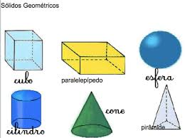

trabalho feito por:
Rhian, Carllos,Abner, Brayon e Luiz
Sólidos geométricos são os objetos tridimensionais definidos no espaço. Alguns exemplos de sólidos geométricos são: cubos, pirâmides, prismas, cilindros e esferas. O conjunto de todos os sólidos geométricos costuma ser dividido em três grandes grupos: poliedros, corpos redondos e outros.
